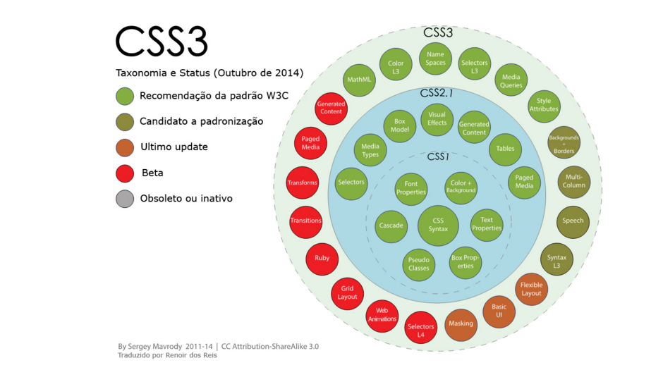

Em 1998 a W3C decidiu que não iria evoluir o HTML, para eles o futuro era o XML. Assim, congelaram o HTML na versão 4.01 e lançaram o XHTML (uma versão XML do HTML). Começou-se o trabalho em uma especificação chamada XHTML 2.0 (revolucionária mudança na linguagem, quebrando a retrocompatibilidade para se tornar mais lógica e progetada).
HTML:
Surgiu em 1990 e sua primeira versão foi baseada na linguagem SGML, utilizada para estrutuação de documentos, foi dessa linguagem que o HTML herdou diversas tags. O objetivo inicial do HTML era de interligar faculdades próximas para o compartilhamento de documentos.
HTML5:
O HMTL5 começou a ser desenvolvido em 2004 pelo WHATWG (Web Hypertext Application Technology Working Group), em 2006 a W3C decide colaborar com esse desenvolvimento e em 2008 publicaram a primeira versão do HTM5. A partir daí muitas empresas passaram a focar no HTML5.

Vantagens e desvantagens do uso da linguagem HTML5
Vantagens
O HTML5 permite a criação de aplicativos capazes de rodar numa variedade de dispositivos. “O HTML5 vai ajudar smartphones, tablets, PCs, televisores e veículos a convergir no futuro”, disse Neil Mawston (diretor executivo da Strategy Analytics).
Aplicativos em HTML5 apresentam vantagens em serviços na internet, têm as características dos programas nativos, exibem vídeos, músicas, animações e podem armazenar dados no próprio aparelho, ficando disponíveis até quando não há acesso à internet. Desenvolvedores vêm trabalhando para reduzir o tamanho de arquivos e tornar a experiência do usuário mais limpa, não há necessidade de instalar plugins para visualizar algo desenvolvido em HTML5.
Cada vez mais navegadores dão suporte ao HTML5 e por isso já pode ser usado na prática por quem desenvolve aplicativos e sites.
“O HTML5 não é uma tecnologia monolítica, mas uma coleção de funcionalidades, tecnologias e APIs que trazem o poder de aplicaçoes desktop e a vibração da experiência multimídia à web - ao mesmo tempo em que amplifica os principais pontos fortes da web: interatividade e conectividade” - HTML5 Rocks.
Uma outra grande vantagem do HTML5 é ser padrão aberto, não pertence a uma determinada empresa ou navegador. Muitas companhias importantes participam do grupo de trabalho que define o HTML5 no W3C (Samsung, LG, Apple, AT&T, France telecom, Microsoft, Adobe, Zynga, IBM, HP, Google, Netflix…).
Outro fator é a rentabilidade, ou seja, você pode vender seu aplicativo - em HTML5- diretamente do seu site ao cliente, sem precisar das lojas virtuais e assim, evitar as taxas cobradas sobre o conteúdo.
Desvantagens
Apesar de suas capacidades, o HTML5 apresenta desvantagens e limitações que os desenvolvedores devem considerar.
O usuário final tem controle sobre o código executado na máquina e nas aplicações web, com uma ferramenta de depuração, fica fácil ver o código, o que torna um pesadelo para a segurança. Assim, fica fácil editar e fazer modificações no código do APP tornando os aplicativos não confiáveis para a coleta de dados.
Sabemos que a permissão de armazenamento local de dados é uma das funcionalidades mais destacadas no HTML5, no entanto, deve-se lembrar que o armazenamento local é por site e estará disponível toda vez que o site for acessado. O usuário não pode mover os dados que foram armazenados, eles não são como planilhas ou documentos de texto, fáceis de abrir em qualquer editor. Embora o usuário não tenha controle sobre os dados armazenados, o site central pode ter problemas com a sincronização e a segurança desses dados.